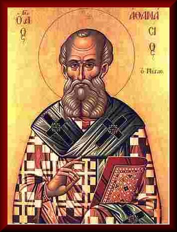

Revista Roma N° 98 - Marzo de 1977
ATANASIO Y LA IGLESIA
DE NUESTRO TIEMPO
(En su lucha contra el modernismo)
Monseñor Rudolf Graber, Obispo de Regensburg
San Atanasio es modelo de la virtud de la santa intransigencia. Recomendamos a los que combaten por la pureza de la fe, por la verdadera doctrina cristiana, que se encomenden a su protección y patrocinio.

Para descargar en formato PDF pulse AQUÍ
El 1600 aniversario de la muerte de San Atanasio no debe pasar, sin que se haga mención del mismo por lo menos en un comentario. San Atanasio se encuentra entre aquellos escasos Santos a los cuales la Historia ha concedido el calificativo de "el Grande".
Para no extendernos demasiado, citaremos aquí lo que Juan Adán Möler, dice de él en el prefacio de su obra "Atanasio el grande y la Iglesia de su tiempo", especialmente en la lucha contra el Arrianismo (Maguncia, 1844): "Ya cuando entablé mis primeros contactos con la Historia de la Iglesia, me pareció Atanasio de tal importancia, tan extraordinaria su vida, sus persecuciones por causa de la fe, su resurgimiento, su nueva caída y reiterada subida, su alta dignidad cristiana, y su sublimidad sobre toda desgracia vislumbrada en toda su historia, que despertó tanto mi simpatía, que sentí un profundo deseo de conocer más íntimamente a este gran hombre y estudiarlo en sus propios documentos. El vago sentimiento que me atraía hacia estos escritos, no quedó defraudado; de ellos manaba una rica fuente de alimento espiritual. Pero, cuanto más iba comparando lo que yo hallaba en Atanasio, con lo que se hablaba del santo en otros libros, más me dolía que este gran Padre de la Iglesia no hubiese sido conocido y reconocido durante tantísimo tiempo, tal como se merecía. Esto me hizo tomar la determinación de trabajar sobre él, de sacar a la luz del día los tesoros de fe y de sabiduría cristiana que albergaba y exponer al mismo tiempo su historia".
En reminiscencia del título de esa obra, hemos escogido el título de "ATANASIO Y LA IGLESIA DE NUESTRO TIEMPO" (En su lucha contra el modernismo).
Ojalá este humilde escrito pudiera contribuir a la actualización de las palabras que San Basilio el Grande escribió en el año 371 a Atanasio: "En todo, el Señor realiza lo grande, por medio de aquellos que son dignos de Él. Confiamos por ello, que este servicio tan excelso valga también para ti, y en consecuencia que finalice el descarriamiento del pueblo, que todos se sometan al mutuo amor y que se renueve la antigua fuerza de la Iglesia". Regensburg, en la Fiesta de San Atanasio, 2 de mayo de 1973. RUDOLF GRABER, Obispo de Regensburg
INTRODUCCIÓN
Han transcurrido 1600 años desde la muerte de una de las "personalidades más relevantes de la antigua Historia de la Iglesia", San Atanasio (295 al 373), Obispo de Alejandría. Él fue el gran defensor, principal y probado, de la doctrina de Nicea(1)No menos de cinco veces hubo de exilarse, una de ellas a Alemania, en el año 335, refugiándose en Treveris. La situación de la Iglesia era entonces semejante a la actual y Konrad Kirch tiene razón cuando afirma de Atanasio: "La Providencia envió al mundo a aquel hombre en unos días en los que una fuerte tempestad rugía cada vez con más fuerza, sacudiendo las columnas de la Iglesia, hasta tal punto que amenazaban hundirse, los sagrados muros parecían derrumbarse, se diría que el poder de las Tinieblas y las fuerzas del Abismo podrían exterminar la Iglesia de la tierra. Pero hubo alguien firme como una roca, como un dique: Atanasio; él saltó a la brecha, Atanasio blandió el acero divino sobre Oriente y Occidente, Atanasio"..(2)
Hasta qué punto este gran confesor llegó a remover a las almas en aquellos turbulentos tiempos, es lo que nos muestra -para citar solamente un ejemplo- el escrito político-eclesiástico del gran Görres, "Atanasio(3), publicado después de la detención del Arzobispo de Colonia, Klemens August Frelherr von Droste-Vischering y que provocó "el nacimiento de un pueblo católico germano"(4)en 1838. De dicho escrito nos dice Franz Schnabel: "El efecto de este folleto fue imponente. En él hablaba un genial y experto periodista, que se hacía entender con sus palabras y adecuados ejemplos, y sabía cómo ganarse al lector culto, de forma que a través de él se extendiese hacia el pueblo el efecto apetecido. Al cabo de sólo pocas semanas, todos los folletos, siete mil ejemplares, se habían agotado".(5)
El Gobierno prohibió la obra, pero hubo de desistir porque la resistencia que se había creado era demasiado fuerte. En el prólogo a la segunda edición, Görres critica agudamente a los que exigían un "Concilio germánico": "Entonces vendrán buenos tiempos y los antiguos serán borrados. Todos los que, desde hace cincuenta años, han tenido una idea desatinada, que no ha encontrado acogida, podrán introducirla de nuevo; será entonces o nunca".(6) Este Concilio debería ser "ecuménico".(7) Como condición previa a la admisión de los Protestantes, Görres reclama irónicamente "que hubiesen destruido con su crítica, al menos un capítulo de la Biblia; a los que por lo menos explicaban un milagro como algo natural y, por consiguiente, eran capaces de continuar por este camino; a los que eran capaces de encontrar un nuevo mito judío o cristiano y darle explicación; a los que reducían a simples abstracciones y destruían todo fundamento de la doctrina de la Iglesia invisible, del mundo sobrenatural, de la inmortalidad del alma, de la oposición entre el bien y el mal: todos ellos deberían ser admitidos y lograrían con sus meritísimas obras, voz y voto". (8)
Con mayor sarcasmo aún se manifiesta sobre los participantes católicos a este ficticio Concilio. Sería "natural" para eliminar cualquier dificultad "proceder a la destitución del Papa... ciñendo interinamente la tiara, el ilustre presidente. Entonces podríamos acudir rápidamente a salvar la angustia que sufre una parte del clero católico, decretando la inmediata abolición del celibato... Una vez tomadas estas disposiciones el Santo Sínodo no tardaría en proceder a ordenar y establecer la Doctrina. Como base fundamental habría que proyectar un nuevo Credo, de tal forma, que todas las personas razonables pudieran profesarlo. Después de los progresos hechos últimamente por la ciencia, no debería ser difícil, llevar a cabo tal obra, tanto más, cuanto que de muchos lados existen buenos trabajos preliminares".(9) Görres mismo, trata entonces de formular un nuevo Credo, apoyado fuertemente sobre la Filosofía contemporánea de Hegel, ridiculizándola.
Rebasaría mucho el marco de nuestra introducción, si quisiéramos entrar en detalles sobre el contenido del "Atanasio". sin embargo, no podemos omitir el citar algunos puntos, dejando al criterio del lector, el descubrimiento de afinidades con nuestro tiempo.
Seduce mucho el comentario de Görres sobre el espíritu de mentira del siglo: "Se ha llegado al extremo, de vernos rodeados por todas partes de mentiras, como de una atmósfera que nos envuelve; la respiramos y la expiramos... Así ha sucedido que en las épocas más importantes andamos en un mundo ficticio; en un mundo artificial reino de fábulas, que nos hemos creado con nuestras miras limitadas, nuestras opiniones preconcebidas, nuestro mediocres pensamientos y pobres pasiones; nos hemos distanciado tanto de la realidad de las cosas, que ya no las podemos reconocer con nuestro mal chapuceo".(10)
Sin embargo, Göres no solamente se ocupa del suceso de Colonia, sino que retrocede muy lejos en su prehistoria. Según él la eliminación del jefe supremo del imperio, el Emperador, habría debido arrastrar también la del Papa. Pero al no conseguir esto, por lo menos "deberían disgregarse... de él los miembros... Como fueron los juristas de palacio, y los diplomáticos territoriales, los que iniciaron y completaron la primera obra, fueron los canónigos palaciegos y teólogos metropolitanos, los que acometieron el otro negocio y en el proyecto vinieron a tomar parte sacerdotes católicos para asistir con sus consejos, ayudando diligentemente a la ejecución".(11)
Hasta aquí algo sobre "Atanasio" del gran Görres del cual conmemoramos el 125 aniversario de su muerte. En nuestro siglo, nos volvemos a encontrar con el Alejandrino en la novela de Cosom Flam (seudónimo del Dr. Josef Pietstch) desaparecido durante el asedio de Breslau, y publicada en 1030: "Atanasio viene a la capital o al foso de las fieras").(12) en esta novela utópica, a la que hoy se le puede atribuir el calificativo de profética,(13) el escritor describe la capital de Teiloba, "de la cual se había erradicado radicalmente a Dios, al espíritu, al alma y a la naturaleza, donde el amor ha sido degradado a la sexualidad y donde domina la dictadura de la técnica".(14) En esta ciudad vive un pequeño grupo de personas que habían oído algo sobre Cristo y que se llaman cristianos. A estos cristianos de compromiso Atanasio dirige entre otras, las siguientes palabras: "Queréis ser hijos de la luz, pero no queréis abandonar la filiación del mundo. Deberíais creer en la penitencia, pero creéis en la felicidad de los nuevos tiempos. Deberíais hablar de misericordia y gracia, pero preferís hablar de progreso humano. Deberíais anunciar a Dios, pero preferís predicar el hombre y la humanidad. Os llamáis según Cristo, pero mejor deberíais llamaros de Pilatos... Sois la gran perdición, pues os halláis en el medio, en donde queréis estar entre la luz y el mundo. Sois maestros en el compromiso y seguís al mundo. Yo os digo: vale más que os marchéis al mundo, abandonando al Maestro cuyo reino no es de este mundo".
¿No son estas en verdad palabras proféticas? Todo lo que citamos de estas obras, revela claramente nuestra intención. El enérgico e imperturbable Atanasio debe levantar también hoy su voz contra lo que está sucediendo en la Iglesia.
Poco después del fatídico 30 de junio de 1934, cuando los seguidores de Hitler sofocaron el aparente golpe de estado de Röhm liquidando una serie de personas no gratas al régimen, tales como Klausener, Gerlich y Probst, apareció en la Editorial Liga de Lucerna un pequeño pero conmovedor librito: "San Ambrosio y los Obispos alemanes". Con suplicantes palabras se llamaba a los Obispos a imitar el ejemplo del Obispo de Milán, quien en el año 390, se enfrentó al Emperador Teodosio, exigiéndole hiciera penitencia, porque en el circo de Tesalónica había hecho degollar, en castigo de un acto de linchamiento, ejecutado por la plebe, a dos mil personas -y esta era la exhortación de dicho escrito- protestando solemnemente los Obispos contra lo ocurrido el 30 de junio de 1934. También este ejemplo nos muestra, como la gente en tiempos de tribulación y desconcierto se orienta por aquellos grandes hombres del pasado, cuyo valor y fuerza de actuación trasciende a través de los siglos.(15)
Antes de referirnos ahora a una carta pastoral de Atanasio, debemos señalar en breves líneas, la situación de la Iglesia en época del Santo. Pero dejemos hablar unos momentos a San Basilio, quien en una carta del año 371 escribe: "La herejía extendida desde hace tiempo por Arrio, el enemigo de la verdad, llegó a desvergonzadas alturas, y al igual que una amarga raíz, produce frutos nocivos y se hace poderosa, ya que los abanderados de la verdadera Doctrina han sido expulsados, gracias a calumnias y agravios, de las diversas iglesias, dejando los poderes de su administración en manos de aquellos que sabían hacerse suyos los corazones de los ingenuos".(16)
En una carta del año 371/372, dirigida precisamente a Atanasio, se encuentran las siguientes significativas palabras: "Toda la Iglesia se halla en disolución"(17). La elevación de la vista a esta columna del Nilo, da valor al Obispo de Cesárea "desde lo más profundo de la desesperación, para esperar días mejores"(18). Otra carta, escrita en el año 372, va dirigida a los Obispos de Italia y de la Galia, para que acudan en su ayuda, "antes de que la Iglesia naufrague del todo"(19); pues "no sólo es una Iglesia ni dos ni tres, las que se ven amenazadas por este grave temporal. Casi desde los confines de Iliria hasta Tebas se extiende el mal de la herejía. La fatal semilla ha sido distribuida primero por el tristemente célebre Arrio"(20). El mismo año habla a los sacerdotes de Tarso diciendo que "los actuales tiempos tienen una fuerte tendencia a la subversión en la Iglesia"(21).
Precisamente hace 1600 años, en el año de la muerte de Atanasio, plantea en una carta a los Alejandrinos la cuestión: "¿Es que el Señor ha abandonado totalmente a su Iglesia? ¿Ha llegado la última hora y se inicia aquí la segregación, para que se manifieste el hombre del pecado, el hijo de la perdición, el antagonista, que se levanta sobre todo lo que se dice Dios y templo?"(22). Estas breves citas, que naturalmente pueden multiplicarse, dejan entrever como era entonces la situación de la Iglesia. Lo que el Capadocio cuenta de gorma general, lo citó Atanasio en detalle en una carta pastoral, la cual por su gran impacto de estilo e inenarrable dolor de escritor, es única y por ello debe ser el marco para nuestra disertación.
También aquí debemos perfilar brevemente el trasfondo histórico. De nuevo un Sínodo arriano, el de Antioquía, había destituido en 339 al "inmortal" Obispo de Alejandría (Atanasio), instituyendo en su lugar al Capadocio Gregorio.
"La noticia de la nueva destitución de Atanasio dio en Alejandría la señal para el ataque. Con mano dura intervino el prefecto Imperial Filagrio. En la noche del 18 de marzo del 340, fue expulsado Atanasio del palacio episcopal. El pueblo rodeaba amenazador las iglesias. Atanasio quiso evitar lo peor y con toda urgencia bautizó a los catecúmenos, huyendo después, y bajo la protección de un pelotón de guerreros entró Gregorio a caballo en la ciudad. Los judíos, paganos y arrianos vitoreaban al mercenario. Entre la comunidad de los fieles se levantó una sorda protesta y un grito de desesperación, cuando Gregorio se hizo cargo de sus iglesias bajo atroces crímenes. Fue un Viernes Santo. El Patriarca expulsado oyó en su escondite, cerca de la ciudad, como el grito de muerte de las víctimas de Gregorio superaba el Aleluya Pascual. Vinieron mensajeros comunicándole que centenares habían sido sacados de las iglesias para encarcelarlos, santas vírgenes habían sido desnudadas en las plazas delante de los Santuarios, flagelándolas con palos hasta que caían muertas, y en el cielo vio reflejado el resplandor de las hogueras de las iglesias cristianas".
No pudo contenerse más y escribió una carta a todos sus Obispos, líneas llenas de un profundo dolor, pero también de invitación urgente a la lucha. Violaron y mataron a la mujer de un Levita; en su dolor y desesperación, el Levita descuartizó el cadáver y envió los trozos a todas las tribus de Israel, para que no dudasen del crimen y se levantasen para vengarlo, y todas las tribus se pusieron en movimiento, iniciando una guerra santa. Así empieza Atanasio, y sigue diciendo: "La desgracia del Levita no es nada comparada con lo que ahora se ha intentado contra la Iglesia", y por el amor al Salvador les conjura: "no desdeñéis estos ultrajes, no permitáis que la famosa Iglesia de Alejandría sea pisoteada por los herejes para que en breve no quede destruida la fe y las leyes de la Iglesia" (23).
Esta Introducción, que se basa en un atroz acontecimiento narrado en el Libro de los Jueces(24), nos la hacemos nuestra textualmente e intentaremos explicar, en el espíritu de Atanasio, lo que ocurre entre las doce tribus del nuevo Israel, para que éstas se levanten y entablen una lucha decidida contra la amenaza de "disolución de la Iglesia", de la que habló Basilio, o contra la "autodestrucción" de ésta, como la ha llamado Paulo VI (25)
CIRCULAR DE SAN ATANASIO A
TODOS LOS OBISPOS EN EL AÑO 340
"A la asamblea de sus hermanos Obispos, a los queridos Señores, manda Atanasio sus saludos (alegría) en el Señor.
Lo que hemos sufrido es terrible y casi insoportable; no es posible explicarlo como corresponde. Pero, para que el horror de los acontecimientos sea conocido más rápidamente, he considerado bueno recordar un pasaje de la Sagrada Escritura.
Un Levita, cuya mujer había sido gravemente ultrajada -era una hebrea de la tribu de Judá- conoció el horror de este crimen. Trastornado por el ultraje que se le habla inferido, descuartizó -según refiere la Sagrada Escritura en el Libro de los Jueces (Ju. 19)- el cuerpo de la mujer muerta y mandó los trozos a las Tribus de Israel. No solamente él, sino todos, debían sufrir con él este grave crimen. Si ellos compartían su dolor y sufrimiento, todos a una debían vengarlo también. Pero si no querían saber nada, debería caer la ignominia sobre ellos, como si fuesen los criminales. Los mensajeros dieron cuenta del suceso. Pero los que lo vieron y oyeron, declararon:
jamás ha sucedido nada semejante desde los días en que los hijos de Israel salieron de Egipto. Todas las tribus de Israel se movilizaron y, como si lo hubiesen sufrido en su propio cuerpo, se unieron contra los criminales. Estos fueron vencidos en la guerra y aborrecidos de todos, pues los bandos reunidos no atendieron la pertenencia tribal, sino que sólo miraron con indignación el crimen cometido.
Vosotros, hermanos, conocéis este relato y lo que la Escritura quiere señalar con él. No quiero extenderme más sobre ello, puesto que escribo a enterados, y me esforzaré por atraer vuestra atención sobre lo que ha acontecido ahora, que es más espantoso que lo de entonces. Por esto he recordado este relato, para que podáis comparar los acontecimientos y hechos actuales con los descritos y reconozcáis que lo actual excede encrueldad a lo de entonces. Y deseo que en vosotros crezca una mayor indignación contra los criminales, que la que entonces hubo. Pues la dureza de la persecución contra nosotros, es incluso superior.
Nimia es la desgracia del Levita comparada con lo que ahora se está haciendo con la Iglesia. Nada peor ha ocurrido jamás en el mundo, ni nadie ha sufrido jamás mayor desgracia. En aquel tiempo fue una sola mujer la ultrajada, un solo Levita el perseguido. Hoy es toda la Iglesia, la que sufre injusticias, todo el sacerdocio el que padece insolencias y -lo que es aún peor- la religiosidad es perseguida por la teofobia y la impiedad. Entonces cada tribu se asustó al ver un trozo de una sola mujer. Hoy se ve despedazada a trozos toda la Iglesia. Los mensajeros que os son enviados a vosotros y a otros, para transmitir la noticia, sufren la insolencia y la injusticia. Conmoveos, os lo imploro, no sólo como si fuésemos nosotros solos los que hubiésemos sufrido injusticia, sino también vosotros mismos. Cada uno debe ayudar, tal como si él mismo lo sufriese. Si no, dentro de poco se derrumbará el orden eclesiástico y la fe de la Iglesia. Ambas cosas, amenazan, si Dios no restablece rápidamente y con vuestra ayuda, el orden querido, si el sufrimiento no expía por la Iglesia.
No es ahora, cuando la Iglesia ha recibido el orden y los fundamentos. De los Patriarcas los recibió bien y con seguridad. y tampoco es ahora que se inició la fe, sino que nos vino del Señor a través de sus discípulos. Que no se pierda, lo que desde el principio hasta nuestros días se ha conservado en la Iglesia; no malversemos lo que nos fue confiado. Hermanos, como administradores de los Misterios de Dios, dejad conmoveros, ya que veis como todo ello nos es robado por los otros. Los mensajeros de esta carta os dirán más cosas; a mi sólo me cabe reseñároslo en breves líneas, para que realmente reconozcáis que jamás ha sucedido nada semejante contra la Iglesia, desde el día en que el Señor, ascendido a los Cielos, dio el encargo a sus discípulos con las palabras: "Id y enseñad a todos los pueblos, y bautizadles en el nombre del Padre y del Hijo y del Espíritu Santo"(26).
CAUSAS DE LA CRISIS INTERNA DE LA IGLESIA
Lo que sucedió hace más de 1600 años, se repite hoy, sólo que con la doble o triple diferencia: Alejandría es hoy toda la Iglesia universal que se ve conmovida en sus cimientos y lo que entonces aconteció con violencia física y crueldad, se ha desplazado hacia otros planos. El exilio ha quedado sustituido por el silencio, y el asesinato lo ha sido por el desprestigio. Al Intruso Gregorio, que entonces se sentó en la sede episcopal de Alejandría, Pablo VI lo ha caracterizado como e1 "Satanás que se ha introducido en el templo de Diosa través de una rendija" (27).
Si le hacemos responsable de la confusión existente en la Iglesia, no significa que sean inocentes los que son sus instrumentos o, incluso, los que creen poder negar su existencia, sino que solamente queremos poner de manifiesto claramente toda la verdad bíblica, afirmando que existe un diablo, que es el padre de la mentira (Jo 8, 44) y el homicida desde el principio (misma referencia) y el cual al tentar a Jesús pudo afirmar de sí mismo, que le era dado todo el poder y la gloria sobre todos los reinos de la tierra y que los cede a quien quiere (Luc. 5, 5 y ss.). En aquélla época ya se reconoció de dónde provenía la herejía y Basilio escribió en 373: "Cuando el Demonio vio que a pesar de la persecución, que partió de los paganos, la Iglesia iba creciendo y floreciendo aún más, modificó su plan y ya no luchó abiertamente, sino que preparó la persecución secreta, escondiendo su traición bajo el nombre que lleváis, de manera que sufrimos lo mismo que en su día nuestros padres, pero no por Cristo, puesto que también los perseguidores llevan el nombre de cristianos"(28). ¿No corresponden estas palabras exactamente a nuestra situación actual? Las persecuciones sangrientas parecen haber pasado, hoy se procede de una manera más fina y elegante y más endiablada. Realmente existe un plan demoníaco(29), que ya señala el Papa León XIII, cuando dice: "En estos monstruosos y oscuros esfuerzos, parece evidenciarse, en cierto modo, el indestructible odio y la sed de venganza de Satanás contra Jesucristo"(30).
Hemos de ver este plan en sus inicios, y con ello tocamos ya la cuestión de las causas de la actual crisis interna de la iglesia.
El Papa San Pío X, en su encíclica sobre el Modernismo, ha designado a este como "el colector de todas las herejías" ("omnium haereseon conlectum") (31). Y en efecto, si miramos hacia la Iglesia de la Antigüedad, vemos las doctrinas heréticas de entonces surgir con nueva vestimenta. Arrio, que negó la consubstancialidad, la unidad del Logos con el Padre, sigue viviendo. Vive allí, en donde se quiere eludir el credo unívoco de que Cristo es el verdadero Dios, evadiéndose hacia designaciones más diversas, humanas y quizá aparentemente más bellas. Pero el dogma central de nuestra fe es prácticamente negado. Pelagio, que niega el pecado original y exagera de tal forma la fuerza de la voluntad humana, hasta el punto de que la Gracia no juega papel alguno, sigue viviendo. Es curioso, como estas doctrinas heréticas están cobrando nueva virulencia. ¿Cuál es la causa? Es la huída ante el misterio, es la autocracia del hombre con su ratio, la que aclara la solución arriana del Misterio de Cristo, ya que la hace comprensible; es el orgulloso alarde de la voluntad del hombre, que puede todo lo que quiere y no se deja llevar de la tutela de las fuerzas sobrenaturales de la Gracia. Todo ello va entremezclado con una especie de Gnosis, que trata de integrar en el mundo al primitivo Cristianismo en una de sus direcciones(32), es decir, que ya entonces se quiso llevar a cabo un aggiornamiento.
Mas, dejemos esto aparte. Saltemos todo un milenio y nos hallaremos en el esclarecimiento del proyecto luciférico, de la mayor revolución espiritual de nuestra Historia, en el Humanismo y el Renacimiento. Pues aquí es donde se inicia el proceso secular, que desde entonces viene determinando la orientación de la Historia y del sentido de la vida. Aquí es donde se produce el "viraje copernicano" en sentido inverso. Mientras que hasta entonces el hombre y la Historia se orientaban hacia Dios, el hombre se halla ahora en el centro, al cual cuatro siglos más tarde, se le agrega la materia, la cual incluso llega a dominarle. El hombre es desde aquel momento la medida de todas las cosas. ¿Debemos aducir aquí ejemplos del presente? La "Teología de Dios ha muerto" -no importa como se interprete- es la última novedad. Y esta tendencia no se para ni ante lo más Sagrado. Dios ha sido puesto de lado e incluso en las oraciones es el hombre el que predomina.
LA ILUSTRACIÓN
La Ilustración es otro paso en la realización del diabólico plan. En el homenaje a Hans Lilje, con motivo de su 65º aniversario (el 20 de agosto de 1964), "Despido del cristianismo, 17 respuestas de publicistas y teólogos a una provocación contemporánea", hay una aportación de Hans Jürgen Baden, titulada "La segunda Ilustración"(33). El autor evangélico opina, como alguno de nuestros contemporáneos, que ahora hemos entrado en un segundo período de la Ilustración y que han vuelto los típicos síntomas de la Ilustración de hace 250 años (34). También esto es de sobras conocido. Pero vale la pena releer en el "Athanasius" de Görres, como éste describe al Clero en la última fase de la Ilustración, poco antes de la Revolución Francesa y nos preguntamos si -dejando aparte el estilo- lo que Görres denigró entonces, no lo encontramos actualmente por doquier.
"Pues, no se puede negar ni ocultar que muchos miembros de este Clero ya se habían entregado en los penúltimos tiempos, -es decir antes de producirse los últimos cambios-, tanto masivamente en muchas de sus más nobles Instituciones, como personalmente en muchos de sus individuos y de un modo cada vez creciente, a una progresiva laxitud; que por ende condujo ya en aquélla época, a que entrasen y saliesen hastiados de las catedrales, construidas por el entusiasmo y la fe de sus mayores, y que en las imágenes, con que su mano artífice adornó el interior de las mismas, no viesen otra cosa que trastos viejos; sin apenas sospechar o tener nociones del rico tesoro, del cual debían ser custodios y transmisores. Junto a la generación que se iba y que, con la seriedad de otros tiempos, trataba de conservar rigurosamente los últimos vestigios de antiguas y vivas tradiciones, se levantó una gene ración nueva que, despreciando aquélla, consideraba dicha seriedad como oscura superstición monacal y la severidad como inútil automortificación declarando ambas cosas como pasadas de moda y buscando puntos de entendimiento con las ideas de la época. Como brillante ejemplo aparecía ante sus ojos el protestantismo; al cual sólo bastaba aproximarse para rejuvenecer lo anticuado en rápida transformación. Se decidió poner manos a la obra, lo que no obstante, debía hacerse en principio con toda moderación y respeto y sin detrimento de lo fundamental. En primer lugar se procedió a la Dogmática, que contenía muchas cosas cuyo entendimiento en la creciente mediocridad de los tiempos, se iba perdiendo paulatinamente; ahora se declaró como completamente incomprensible, repudiándolo como tal, del ámbito de lo único digno de saber. El Misterio, que en su quieta luminosidad requería para su apreciación y cognisción de una mirada profética espiritual y en su hondura de una profundidad espiritual, lo suficientemente completa para captarlo, sólo halló miradas atónitas, y su profundidad fue colmada por la sabiduría del mundo: por ello, su luz espiritual se iba apagando ante el brillo de lo físico y, dado que se sustraía totalmente las fuerzas de captación de la época, ya tampoco lo quiso conservar en sus signos externos. La antigua doctrina había convertido su plenitud interior en muchos principios que representaban baluartes avanzados contra el mundo; pero ahora, ya que con la vida interna del núcleo iban enfriándose también las extremidades, se abandonaron igualmente éstas, eliminándolas y desechándolas como inútiles y superfluas. Así, una vez vaciada la alta fortaleza desde el centro y abandonadas las avanzadas exteriores, la doctrina quedó relegada a las necesidades cotidianas y al campo de la vida material, quedando totalmente secularizada en su simplicista limitación. Con respecto a la disciplina se procedió por los mismos medios. También aquí se había perdido completamente el sentido y significado de la ascesis, y el convencimiento de su ineludible necesidad para el sacerdote había desaparecido por completo. Por ello, la antigua disciplina se consideró de una dureza imperdonable contra la naturaleza; por esta razón, como todo lo que se exagera, no podía conducir jamás a la meta sino más bien a la rebelión de los así maltratados, apartándolos de su camino. De esta manera, por doquier se sentían incitados a contribuir a la liberación de los oprimidos; las tensas riendas de la castidad y moral se fueron aflojando en todas partes y en algunas, incluso parcial mente soltadas, a la vez que se iba eliminando y sustituyendo en el servicio externo, la antigua y amplia toga por las clámides (clergis) más cómodas. Todo ello iba pasando, muy pronto, de la práctica individual a las instituciones; las reglas de las Ordenes religiosas y las tradiciones de todos los estamentos se fueron suavizando por doquier y en todas partes iba imponiéndose la laxa observancia frente a la estricta, incluso en los Seminarios, en los que los seminaristas se iban educando conforme a tales principios" (35).
SOCIEDADES SECRETAS O ESOTÉRICAS
En la época de la Ilustración o de las Luces surgieron una serie de asociaciones antieclesiásticas, de las cuales citaremos solamente dos, la Masonería, fundada en Londres en 1717 y la orden de los Ilumniados, fundada el 1º de mayo de 1776 por el Profesor de Derecho Eclesiástico Adam Weishaupt en Ingolstadt (36). Con ello tocamos el problema de las sociedades secretas o esotéricas y su in fluencia sobre la Iglesia y la sociedad. Una y otra vez se ha leído, que la Revolución Francesa se debió a la Masonería. Sin embargo, un libro reciente plantea la fórmula de que: "la masonería no hace las revoluciones, las prepara y luego las prosigue"(37). Sea como fuere, en el seno de estas asociaciones secretas se sembró lo que más tarde se llamó Sinarquía, es decir un Estado Mundial único con un gobierno uniforme, proyectado como Contra-Iglesia. Pero a esto nos referiremos más tarde. En todo caso, la Revolución Francesa fue un importante eslabón en este plan diabólico. No exageramos, si decimos que muchos ámbitos católicos se apropian hoy de sus ideas principales: la libertad, por la protesta contra las estructuras jerárquicas en la Iglesia; la igualdad por la democratización con el sistema de consejeros, y la fraternidad, por el humanitarismo horizontal, donde la Vertical, Dios y toda la trascendencia de por sí, queda absolutamente excluida. Hasta qué punto se relaciona el Concilio Vaticano II con la Revolución Francesa, lo demuestran unas manifestaciones hechas en el XI Congreso del Partido Comunista Italiano de 1964, a las que nos referiremos más adelante.
Pero con ello ya nos hallamos de inmediato ante las causas de la crisis interna de la Iglesia, de la segunda mitad del siglo XX. Hay que tener en cuenta aquí, que las grandes Revoluciones -y nosotros nos hallamos en una de ellas- no se producen espontáneamente; tienen sus precursores, que suelen ser secretos, sus profetas que van sembrando a su alrededor la semilla de la revuelta y finalmente; vienen los cabecillas y los ejecutores. Les precede una fase subterránea; le sigue otra, la de la incubación"(38), hasta que se produce la erupción. Con ello hemos contestado una objeción que se nos podría hacer, cuando pasemos a comentar ciertas Sociedades Esotéricas y sus prohombres del siglo XIX. Es exacto, que muchos de estos nombres no se encuentran tan siquiera en las Enciopedias(39), pero ello no cambia nada en el hecho de que la emponzoñada semilla haya seguido actuando, saliendo a la superficie por primera vez con el Modernismo de principios del siglo XX, que inmediatamente el Santo Papa Pío X yuguló con mano enérgica.
A Pierre Virion le corresponde ante todo el mérito, de haber llamado la atención en sus escritos sobre estas sociedades secretas. Aunque solamente se lea una fracción de lo que Virion recopiló de los textos más o menos desconocidos de los secretos prohombres, uno queda sorprendido y asustado de que a finales del siglo pasado ya apareciesen todas esas ideas, que hoy en día, en plena época postconciliar, someten a la Iglesia a una prueba de rotura. Sin embargo, debe tenerse en cuenta, que todas estas ideas destructivas van orientadas secretamente hacia un fin único, es decir, a crear la Contra-Iglesia o una "nueva" Iglesia, minando y refundiendo la Iglesia antigua, y ello menos por un ataque proveniente de fuera que, como suele decirse en el ámbito político, por la "marcha a través de las Instituciones". Ya hemos citado antes la expresión francesa para todas estas tendencias, que es Sinarquía. Se trata aquí de la suma de poderes secretos de todas las "Ordenes" y escuelas, que se han unido para formar un invisible Gobierno Universal. Desde el punto de vista político, la Sinarquía aspira a la integración de todos los poderes sociales y financieros, que este gobierno universal debe comportar y promover, naturalmente, bajo una dirección socialista. El Catolicismo, como todas las demás religiones, debería ser absorbido por un sincretismo universal. Ni pensar que se le suprimiría, sino que sólo sería integrado y ello ya se está avistando claramente en el Principio de la Colegialidad. Precisamente aquí es donde se aprecian ya las consecuencias subversivas del cuño de nuevas palabras.
En último caso, la Sinarquía plenamente realizada, significaría la Contra-Iglesia (40). De nuevo debemos responder a la objeción de que tales relaciones se deben externamente a una igualdad de palabra y, lógicamente, deben irse a buscar más lejos. Mas oigamos lo que Alphons Rosenberg dice a esto: "...todos estos (y otros) grupos ejercen, aunque siempre de forma Invisible, una influencia sobre la marcha de la reforma de la Iglesia. Sus ideas, sin que se citen propiamente, son introducidas, por medio de la evolución y el cuidadoso cribado de teólogos y pastores (!), en la circulación sanguínea espiritual de la Iglesia..."(41) Estas palabras deberían considerarse como una de las más fuertes y claras pruebas de los métodos dirigidos de infiltración, por parte del enemigo, sacando de ellas las indispensables consecuencias. ¿Se sacarán?
El proyecto de la Sinarquía fue elaborado en los años 1880-1890. Sin entrar en detalles sobre los diversos agrupamientos, como por ejemplo, la Orden cabalística de los Rosa Cruz, de los Martinistas y de los Simbolistas (42), diremos únicamente que el jesuita Riquet y Alec Mellor (44), que defienden la aproximación de la Iglesia a los masones, mantienen estrechas relaciones con estos grupos(43). Del fundador del primero de ellos, el ex-sacerdote Stanislas de Guaita (1861-1897) poseemos, por cierto, un himno a Satanás(45).
Mención especial debe hacerse, además, del ex-canónigo Roca (1830-1893), cuyo nombre no figura ni en el Diccionario de Teología ni en el de la Iglesia, ni en el de la Masonería. Había nacido en Perpiñán (Francia), donde asistió a la Escuela de los Carmelitas; en 1858 fue ordenado sacerdote y en 1869 nombrado canónigo honorario. Hizo viajes a España, Estados Unidos de América, Suiza e Italia. Muy versado en las Ciencias Ocultas desplegó una extensa propaganda, sobre todo entre la juventud, por lo que tuvo conflictos con Roma. A pesar de haber sido excomulgado, siguió en sus actividades predicando la revolución, profetizando la llegada de la "divina Sinarquía" bajo un Papa convertido a un cristianismo científico. Habla de una nueva iglesia iluminada, que está influida por el socialismo de Jesús y sus apóstoles. Roca es, a juicio de Virion "un apóstata de la peor especie" y uno casi se siente tentado a considerar lo que aquél afirma y predice, como profético (46).
Para comprender hasta cierto punto su lenguaje, debe saberse que conserva los conceptos católicos más usuales, dándoles, sin embargo, otro sentido (Igual que hoy en día). Sin ambajes, declara que "mi Cristo no es el Cristo del Vaticano". O, cuando habla de Dios, se refiere al hombre, que pasa a ocupar el lugar de Dios. La palabra reforma significa para él Revolución: "Nada de reformas, sino... no me atrevo bien a expresarla, porque la palabra en si es tan sospechosa..., una Revolución". "El nuevo orden social se fundará (por ello) fuera de Roma, a pesar de y en contra de Roma". Luego viene una afirmación que, como alguien ha dicho, nos impresiona y horroriza hasta lo más íntimo: "La nueva Iglesia, que tal vez ya no pueda conservar más su doctrina escolástica, ni la forma de la Iglesia primitiva, recibirá, no obstante, de Roma la consagración y jurisdicción canónica". Hace pocos años todavía no nos lo hubiéramos podido imaginar, pero ¿hoy...?
A continuación citamos algunas frases de las obras de Roca, que ilustran nuestra actual crisis. Con respecto a la Liturgia del futuro cree que "el culto divino, tal como lo prescriben el ceremonial, el ritual y las disposiciones de la Iglesia romana, sufrirá próximamente, en ocasión de un Concilio Ecuménico (!), una transformación que le devolverá la digna sencillez de la Edad de Oro apostólica, en concordancia con la conciencia y la civilización modernas"(47) y Roca sigue diciendo: "Se está iniciando un sacrificio, que representa una solemne expiación... El Papado caerá; morirá bajo el sagrado cuchillo que forjarán los Padres del último Concilio. El César pontifical es la Hostia consagrada al sacrificio." (48)
Nos sorprende, que ya entonces se hablara de un Concilio. El Rosa Cruz, Dr. Rudolf Steiner, fundador de la Sociedad Antroposófica, declaró en el año 1910: "Necesitamos un Concilio y un Papa que lo convoque". El entusiasmo con que el mundo acogió el Concilio, ¿no fue fomentado, acaso, desde allí? El concepto dominante, es la palabra "nuevo". Roca predice una "nueva religión", un "nuevo dogma", un "nuevo ritual", un "nuevo sacerdocio". A los nuevos sacerdotes los denomina "progresistas", habla de "supresión" de la sotana y del matrimonio de los sacerdotes (49) y confiesa: "El salvador religioso, político y social, dominará sobre la humanidad por medio de instituciones IMPERSONALES (institutions impersonelles)". En relación con esta palabra, se ha señalado con razón cómo aparece por todos lados, en la Colegialidad, en las innumerables "conferencias, comisiones, comités y reuniones"(50). Casi estamos tentados de decir que la persona ha sido apartada y que domina la anonimidad. Aquí evidentemente se manifiesta el plan satánico. Ya no cuenta la persona, que recibe su máxima consagración por la Trinidad y el Dios-Hombre y que ahora se ve ahogada por la colectividad, bajo diversas formas.
Aquí debe intercalarse una observación. Sería erróneo creer que se trata solamente de pensamientos e ideas de un individuo como Roca; no, todo ello se confirma en una serie de personas de ideas afines en infinitos escritos que, por lo menos entonces, eran asequibles a la opinión pública internacional. Y por ello debe plantearse la pregunta: ¿Por qué la Iglesia no tomó conciencia de ello? El Papa Pío X in dudablemente lo hizo. Pero eso fue todo. En el libro del sacerdote Melinge (más conocido bajo su seudónimo de Dr. Alta) "L'évangile de l'Esprit Saint, Jean traduit et commenté" (1907) se desarrolla todo el programa conforme al cual se está "trabajando" actualmente:
-
1. La apelación al Esoterismo.
-
2. La rebelión contra las estructuras de la Iglesia.
-
3. La sustitución del Pontificado romano por otro "pluri-confesional" capaz de adaptarse a un polivalente ecumenismo, que hoy en día ya vemos establecido en la concelebración de sacerdotes y pastores protestantes.
-
4. La glorificación de Cristo por una nueva humanidad.
-
5. La inversión de todas las Verdades enseñadas por Cristo"(51) .
Más claramente ya no se puede hablar. A pesar de ello, el Dr. Alta siguió como sacerdote en la Iglesia y de él se dijo: "En lugar de abandonar la Iglesia, como hizo Lutero, permaneció en el seno del templo para reformarlo"(52).
Pero, volvamos a Roca. De todas las citas, que podrían ampliarse hasta formar un libro, se aprecia sin dificultad la táctica: Despojar a la Iglesia de su carácter sobrenatural, amalgamarla con el Mundo, hacer de la coexistencia confesional una comunidad ecuménica, para ir preparando así la Religión Unitaria Universal en un Estado Universal Unitario. El predicado de la Iglesia "Santa Iglesia Católica" ha desaparecido del vocabulario del diálogo, tal como lo expresó un conferenciante gnóstico "Ofrecemos de nuevo a la Iglesia una ocasión para que se coordine con las demás religiones". A ello corresponde, naturalmente, la "depretrise"(53) de la Iglesia, la secularización en una Iglesia laica y como forma transitoria -de nuevo según Roca- la cooperación de sacerdotes célibes y casados.
En fin, la desacerdotización de la Iglesia ya se ha iniciado de forma angustiosa. No hace falta contar todos aquellos sacerdotes que ya siguen las huellas de Roca (y de Loisy). Virion plantea la pregunta: "¿Cuántos sacerdotes son los que ostensiblemente han permanecido en la Iglesia, pero sólo por la sencilla razón de que así pueden sembrar en secreto el virus de la revuelta?". Roca, que siempre tiende a exagerar, contesta "mil". Pero, Saint-Yves, más comedido, dice: "Conozco a muchos e incluso sacerdotes santos, que (por ignorancia) caminan por la ruta del cristianismo sincretista"(54).
Otra idea moderna, que por doquier estaba representada entonces en estos círculos ocultísticos, era una especie de Mística de la Democracia. Ya entonces se predicaba un Cristo social, y Roca escribe: "Creo que esta redención social del pueblo en la nueva Sociedad ha quedado cumplida por la entronización de la democracia". Y más claramente dice el 26 de julio de 1891: "El cristianismo puro es el socialismo (Le christianisme pur, c'est le socialisme)". Por eso espera del "Converso del Vaticano" la declaración canónica Urbi et Orbi de que "la civilización actual es hija legitima del Sagrado Evangelio de la Redención social"(55).
Todo ello queda completado en la importante obra del masón Yves Marsaudon "L'oecuménisme vu par un Franc-Maçon de tradition" (56), que en términos ditirámbicos dedicó a Juan XXIII y que debía servir de puente, como ya se ha mencionado, entre la Iglesia y la Masonería. Es de notar que alrededor del año 1908, se modifica la estrategia (57): "El objetivo ya no es la destrucción de la Iglesia, sino que se busca utilizarla, penetrando en ella". Con Juan XXIII se cree haber empezado: "De todo corazón deseamos la feliz culminación de la Revolución de Juan XXIII" (58).
"Un día desaparecerá la Iglesia dogmática o se adaptará y, para adaptarse, debe volver a sus orígenes" (59). Esto ya se ve hoy en los sacerdotes: "El sacerdote actual ya no es aquel ser especial... al contrario, progresivamente aspira a entremezclarse con la sociedad moderna"(60). En este proceso de amalgamar juega un papel muy importante la masonería: "Nosotros, los masones tradicionales, nos permitimos ilustrar y transponer la frase de un famoso estadista, adaptándola a las circunstancias: católicos, ortodoxos, protestantes, musulmanes, hinduistas, budistas, librepensadores y pensadores creyentes, sólo son nombres para nosotros. Nuestro apellido es francmasón"(61).
En este punto se ve claramente, cuán próximo se halla lo auténtico y lo falso. ¿Qué hay para nosotros más digno de aspirar que el ecumenismo, según la palabra de Cristo "para que todos sean uno"? (Juan 17, 21). Pero muy sutil es el límite con el ecumenismo sincretista, el cual relativiza la verdad y que al fin conduce a la "super-Iglesia", el gran objetivo de las sociedades secretas.
Sin embargo, hemos llegado lejos. Debemos examinar con lupa otro fenómeno de nuestros días, el relajamiento y las depravaciones sexuales. En una instrucción secreta del año 1819, que respira verdadero espíritu diabólico, se encuentra la orden: "Adulad todas las pasiones, las peores tanto como las mejores..."(62).
En una carta del 9 de agosto de 1839 leemos las palabras: "No debemos individualizar los vicios; para que el vicio se incremente en las proporciones del patriotismo y del odio a la Iglesia, debemos generalizarlo. El catolicismo no teme al puñal agudo más que la monarquía, pero estos dos baluartes del orden social pueden derrumbarse bajo la corrupción; nosotros, en todo caso, jamás nos dejaremos corromper. No creemos, pues, mártires, pero popularicemos el vicio entre las masas. Todo lo que ellas aspiren con sus cinco sentidos, debe hallar satisfacción... Cread corazones llenos de lujuria y no tendréis más católicos. Esto es la corrupción en grande, que hemos emprendido, la corrupción del pueblo a través del Clero, la del Clero por nosotros, la corrupción que nos lleva a cavar la fosa para la Iglesia" (63).
Ya en esa época se expresaba una idea, que sólo ahora ha cobrado su plena realización. Para lograr todos los objetivos, de los cuales se ha hablado, debe "crearse una nueva generación, digna del reino que soñamos. Dejad de lado a los ancianos y a la edad madura; id hacia la juventud y, si ello es posible, a los niños. Una vez sentada vuestra reputación en los colegios, Institutos, Universidades y Seminarios y si habéis logrado la confianza de profesores y estudiantes, entonces procurad que aquellos que se dediquen preferentemente al servicio clerical, asistan con gusto a vuestras reuniones. Esta buena reputación os procurará la entrada y acceso a las opiniones docentes, en el seno del joven clero, lo mismo que en los conventos. Dentro de algunos años, este joven clero se hará cargo de todas las funciones, gracias a la fuerza de las circunstancias... De esta manera preconizáis una revolución en la Tiara y en la sotana... revolución ésta que bastará atizar solamente un poquito, para que se encienda la hoguera en los cuatro costados del Mundo".(64)
PÍO X y EL MODERNISMO
Mirando retrospectivamente a ese siglo XIX, se comprueba que la Iglesia, en su conjunto, no se puso en guardia frente a tales acontecimientos. El mundo estaba demasiado ocupado con las conquistas de las ciencias naturales y de la técnica. Todavía hoy, después de las dos guerras mundiales, se sueña con una eterna evolución y con un paraíso terrenal. ¿y la Iglesia? Era la casa que había sido construida con fuertes torres y baluartes. La roca de Pedro había quedado tan bien cimentada y protegida por todos lados en el Concilio Vaticano I, que ninguna tormenta podría moverla -así se pensaba-. Sólo uno comprendió profundamente el problema: fue el Santo Padre Pío X, de quien nos vamos ahora a ocupar más detalladamente con respecto a su lucha contra el Modernismo. Pablo VI en su encíclica de entronización. "Ecclesiam suam"(65), Declara que actualmente nos hallamos ante una resurrección de los errores modernistas(66).
Lo que dificulta juzgar sobre el Modernismo es esto: que lo justo y lo injusto, las sanas tendencias a una reforma y las revolucionarias y destructivas se hallasen tan juntas; lo mismo que hoy. A este respecto resulta muy instructivo un articulo del Barón Georg von Hertling, en la revista "Hochland"(67), titulado "Pensamientos reformadores romanos" en cuya introducción, expone: "Entre los papeles legados por el Obispo Ketteler de Maguncia, se encontró, según informa su biógrafo el P. Pfülf, S. I., un croquis esquematizado de proyecto de reforma. Ketteler quiso someterlo a la opinión de los Obispos alemanes y llevarlo seguidamente a ejecución con la ayuda de Roma. La reforma debía abarcar a toda la jerarquía, empezando por la elección del Papa y los usos romanos, llegando hasta los decanos y párrocos"(68).
En el ulterior desarrollo del artículo, el autor reseña cómo deberían justificarse la razonada critica y la reforma, y lo que se debería tener en cuenta: "La critica destructiva, la pérdida de la confianza en la buena voluntad de las personalidades dirigentes, la opinión negativa de las instituciones existentes, el exceso de celo para eliminar males reales o ficticios, son, en el ámbito eclesiástico, por sus consecuencias, mucho más peligrosos que en el ámbito estatal. Naturalmente no para el que tiene visión de las cosas, pues éste sabe distinguir entre el ideal y la realidad, entre lo que debería ser por derecho y lo que la debilidad del hombre siempre hace de ello. No desespera de la verdad de la doctrina cristiana de la gracia, porque ocasionalmente hace la experiencia de que se la desfigura por ejercicios supersticiosos, de que se la deshonra por sacerdotes indignos y en un malsano sentido de lucro se abusa de ella. Sabe con cuán fuertes vínculos nos retiene la tradición de nuestros antepasados, sabe cuán difícil es eliminar lo que se ha hecho historia, después que el estado de hecho y la costumbre parecen haberle concedido un derecho de existencia, derecho que un juicio profundo debe negarle. Mas no todos poseen esta visión".
"Incluso en amplios círculos se carece en absoluto de ella. Cabe añadir, que la vida del mundo moderno se mueve muchas veces por derroteros que son ajenos a la fe cristiana sobrenatural, cuando no le son directamente hostiles. Por ello se sienten confundidos y sin resistencia, los mediocres, los vacilantes y los pusilánimes, cuando se levanta una grave acusación contra personalidades eclesiásticas, o una despreocupada crítica dentro de la Iglesia contra una u otra de las instituciones existentes o permitidas. El último y flojo vínculo, que aun les une íntimamente a la Iglesia, se rompe. Creen que deben condenar severamente a toda la piedad católica, cuando se dan cuenta de que se ridiculiza alguno de los banales inventos de algún piadoso insensato. ¿Qué por qué digo todo esto? Porque quiero dejar bien sentada la idea de que sólo puede presentarse como crítico o reformador de la Iglesia ante la opinión pública, quien tenga la voluntad y el poder de mejorar todo lo que reconociese como mejorable, o, por lo menos, que estuviese en situación de presentar sus pruebas y sus proyectos a las autoridades competentes. De lo contrario, y a pesar de su mejor voluntad, sólo escandalizará a los débiles y alegrará a los enemigos"(69).
Desgraciadamente, se prestó poca o ninguna atención a estas palabras de alerta. En la novela "Il Santo", de Antonio Fogazzaro (1842- 1911), incluida en el Índice, hallamos los siguientes pasajes que entroncan con lo que habíamos dicho de las Sociedades Secretas: "Somos, dice Don Paolo, un grupo de católicos, dentro y fuera de Italia, sacerdotes y laicos, que aspiramos a una reforma de la Iglesia. Quisiéramos ver efectuada esta reforma, sin controversias, sólo por la autoridad legítima. Deseamos la reforma de la educación religiosa, la del culto, la de la disciplina del clero, incluso la reforma de las instancias más elevadas. Para lograrlo, debemos crear una opinión pública que permita a la autoridad legítima obrar en consecuencia, aunque ello no se realice hasta dentro de veinte, treinta o cincuenta años (!). Ahora bien, los que así pensamos, vivimos en realidad separados los unos de los otros. Nada sabemos el uno del otro, excepto algunos pocos que publican artículos o libros. Es muy probable que en el mundo católico exista un gran número de personas religiosas y cultas, que piensen igual que nosotros. Creo que sería muy útil para la propaganda de nuestras ideas, el que por lo menos llegásemos a conocernos. Esta noche nos reunimos aquí sólo unos cuantos para un primer acuerdo..."(70). "Levantando algo la voz y hablando más despacio, los ojos fijos en el Abbé Marinier, añadió que consideraba oportuno, no dejar trascender, por ahora, nada sobre lo que se acordase en la reunión, y rogaba a todos que se considerasen comprometidos bajo palabra de honor, a guardar absoluto secreto. Después, volvió a desarrollar sus ideas y el objetivo de esta reunión con más detalle que lo hiciera durante la cena"(71).
"Es muy probable, que todos coincidamos en que la Iglesia católica puede ser comparada a un templo antiguo, que, primitivamente poseía una noble austeridad, sencillez y gran espiritualidad religiosa, y que ha sido deteriorado y sobrecargado con ornamentos y estucos de toda clase, durante los siglos XVII, XVIII y XIX. Los que mal nos quieren, quizás se den cuenta de que solamente se habla en voz alta un lenguaje muerto, que las lenguas vivas apenas se hablan por lo bajo y que el sol entra en él a través de ventanales de color. Pero no puedo creer que todos estemos de acuerdo sobre la calidad y cantidad de los medios para remediarlo. Por ello consideraría mejor que antes de proceder a fundar la francmasonería católica, nos pusiéramos de acuerdo sobre la manera de efectuar las reformas. Quiero ir todavía más lejos. Creo que, aunque existiera un completo acuerdo en el modo de pensar, no les aconsejaría que se ligasen con un vínculo sensible. Mi punto de vista es de naturaleza muy delicada. Ustedes confían en que pueden nadar muy bien bajo el agua como peces cautos, pero no piensan en que la vista aguda del sublime Pescador o de cualquiera de sus representantes, los puede descubrir y con un arpón bien dirigido, pescarlos. Jamás aconsejaría a los más finos, sabrosos y buscados peces, ligarse unos con otros. Ustedes comprenden lo que pasa cuando cogen a uno y lo sacan a la superficie. Y saben muy bien, que el gran Pescador de Galilea echaba los pececillos a su estanque, pero el gran Pescador de Roma los cocina"(72).
Se intentaba, pues, una unión secreta entre todos los de igual opinión, una masonería católica, de la que se dijo casi proféticamente: "Las reformas ya se realizarán algún día, las ideas son más fuertes que el hombre y harán su camino"(73). Y lo han hecho exactamente en cincuenta años. Pero también se ha realizado lo demás: el gran Pescador de Roma ha sacado los peces a la superficie. Fue el Papa Pío X quien en su Encíclica "Pascendi", del 8 de septiembre de 1907 (74), condenó al Modernismo. Es muy de lamentar que esta Encíclica no se haya reeditado, para que todos los lectores pudiesen convencerse de inmediato, de que todo lo que hoy se designa como nuevo y adelantado, ya se había manifestado entonces; o sea, que ni es nuevo ni es progresivo.
Pasemos a esbozar ahora brevemente dicha Encíclica. El Papa se lamenta de que los errores modernistas "hayan surgido en el seno de la Iglesia, incluso entre el clero". Estos enemigos de la Iglesia se llaman a sí mismos "reformadores de la Iglesia", rebajando la divina persona del Redentor, en blasfémica osadía, a un simple ser humano. Los Modernistas son por ello, "peores que todos los demás enemigos de la Iglesia", porque "llevan su mano sobre las raíces, sobre la fe y las más profundas fibras de ésta. Son sumamente hábiles y listos". "Alternativa mente juegan el papel del racionalista y del católico con tal habilidad, que con facilidad atraen a los incautos hacia sus errores". No reconocen a ninguna autoridad y "no quieren admitir limitaciones. La misma fe católica está en peligro. Callar por más tiempo sería pecado. Debemos hablar, debemos arrancarles la máscara ante toda la Iglesia".
Después de esta vigorosa introducción, el Papa examina uno a uno los errores. Dado que, según los modernistas, no se puede conocer a Dios partiendo de las cosas visibles, se eliminan los llamados motiva credibilitatis -tampoco hoy se habla apenas de ellos. Por lo que respecta a la historia, ésta deberla explicarse como "si Dios realmente no hubiese intervenido". Por ello también hay que eliminar de la historia de Jesucristo "todo lo que semeja a algo divino". "Hay católicos, incluso hay sacerdotes, que abiertamente lo confiesan y con esta locura quieren reformar la Iglesia, No se puede suprimir mejor, ciertamente, todo el orden sobrenatural". Por lo que respecta a los dogmas, "son sólo símbolos, signos insuficientes de su contenido", que en modo alguno contienen la verdad absoluta. Los dogmas están sometidos a los "cambios" y por ello son "necesariamente variables, pasajeros", "Para ser vivos deben estar acomodados a la fe y al creyente por un igual, y mantenerse así".
El Papa termina este capítulo con las agudas palabras: "Estos ciegos lazarillos han invertido, con soberbia presunción de sabiduría, los eternos y verdaderos conceptos de verdad y de religión; han fundado un nuevo sistema y, en la salvaje y desenfrenada caza de algo nuevo, olvidan buscar la verdad allí donde tan sólo tiene su segura sede; desprecian las sagradas tradiciones apostólicas, acudiendo a otras doctrinas presumidas, nocivas e inciertas y que no tienen la aprobación de la Iglesia; y en su ceguera, creen poder defender y mantener la verdad."
Nos sorprendería mucho, que ya entonces no se hubiese afirmado que "todas las religiones eran verdaderas", Lo mismo vale para la pregunta que se formula sobre si "Cristo realmente había obrado milagros, si realmente había previsto el futuro, si realmente había resucitado y ascendido al Cielo". Lo mismo que hoy, se transponía entonces Dios al hombre: "Dios es inmanente en el hombre". Como antes los dogmas, también los sacramentos son simplemente "símbolos o signos". En este punto, el Papa intercala una observación, que podría haber sido escrita también hoy: "Como ejemplo, para demostrar la forma en que actúan, acuden a ciertos slogans que repiten habitualmente, porque "atraen", para la propaganda, con más fuerza y poseen el enorme poder de atracción de las grandes ideas que entusiasman".
El paralelismo con nuestra época se ve también, sobre todo, en los juicios modernistas acerca de la Iglesia: "En los tiempos antiguos fue error vulgar que la autoridad venía de fuera de la Iglesia, esto es, inmediatamente de Dios, y por la autoridad venía de fuera la Iglesia, esto es, inmediatamente de Dios, y por eso con razón se la consideraba autocrática. Pero tal creencia ahora se ha envejecido. La autoridad, lo mismo que la Iglesia, brota de la conciencia religiosa, a la que, por tanto, está sujeta, y si desprecia esa sujeción obra tiránicamente. Vivimos ahora en una época en que el concepto de libertad (sensus libertatis) ha alcanzado su mayor altura. En la vida política se ha establecido el régimen popular (populare regimen) ..., por eso tiene la autoridad eclesiástica el deber de usar de las formas democráticas (auctoritate Ecclesia officium inest demo craticis utendi formis), tanto más que si no las usa le amenaza la destrucción. Loco sería, a la verdad, quien pensara que en el concepto de libertad que hoy florece pudiera hacerse alguna vez cierto retroceso. Estrechado y acorralado por la violencia, se extenderá con más fuerza, deshechas Iglesia y religión juntamente". Aquí ya tenemos elementos para la teología actual de la revolución. No es de extrañar que ya en esa época se quisiera enfrentar el triunfalismo de la Iglesia. De ese modo, se exige que la Iglesia renuncie a "todo lujo exterior que hiera demasiado los ojos, ya que la tarea de la Iglesia sólo concierne a lo espiritual". Haciendo un resumen, dice el Papa San Pío X: "Aquí se aplica el principio general: en una religión que vive, todo es comprensible, por eso la Iglesia debe cambiar. La quintaesencia, por así decir, de su enseñanza, desemboca, pues, en la evolución. El dogma, la Iglesia, el culto religioso, los libros que honramos como santos, y hasta la fe deben, si no quieren que se los tenga por muertos, obedecer a las leyes de la evolución". Esa evolución nace "del antagonismo de dos fuerzas, una que impulsa al progreso y la otra que es conservadora y frena. El elemento conservador es muy fuerte en la Iglesia: está en la tradición. Su representante es la autoridad religiosa y eso también a causa del derecho, porque es a la autoridad a la que le incumbe proteger la tradición de manera efectiva; pues la autoridad está aparte de la vida cambiante y no le afecta, o apenas le afecta, todo lo que impulsa al progreso. Por el contrario, aspira al progreso y lo realiza, la fuerza que se adapta a las necesidades más profundas de la conciencia del laico, especialmente de aquel que, como se dice, se halla en medio del torbellino de la vida". Una vez más se ve como hecha a medida para nuestro tiempo la siguiente comprobación del Papa: los modernistas son de opinión que "su lugar está en permanecer en el seno de la Iglesia, con el fin de modificar allí poco a poco la conciencia general", o sea, la inversión subversiva de funciones que se tiene hoy.
En el capítulo sobre la Sagrada Escritura leemos textualmente: "Para los modernistas la diferenciación entre el Cristo de la historia y el Cristo de la fe es cosa completamente corriente".
Agreguemos también algo sobre las tendencias reformadoras de los modernistas que el Papa indica como en orden de catalogación. Declara: "Lo que ya se ha dicho basta con creces para mostrar la búsqueda ferviente e ilimitada de novedades por parte de esa gente, búsqueda que se extiende a casi todo lo que es patrimonio de los católicos; la filosofía tiene que renovarse, principalmente en los seminarios eclesiásticos; la filosofía escolástica debe archivarse en la historia de la filosofía, junto con los demás sistemas perimidos y en lugar de ella los jóvenes deben recibir la enseñanza de la sola filosofía moderna, conforme a nuestra época (hoy en día el existencialismo). Los dogmas y su desarrollo deben reconciliarse con la ciencia y con la historia. En lo referente a la catequesis, la literatura catequística debe ocuparse solamente de los dogmas que han sido modernizados y que correspondan a las posibilidades de comprensión del pueblo... La administración de la Iglesia (régimen) debe ser reformada en todas circunstancias, especialmente en lo disciplinario y lo dogmático. Debe adaptarse interiormente y exteriormente a la conciencia moderna que inclina todo hacia la democracia: por eso el bajo clero, al igual que el mundo laico, debe participar en la administración, y la autoridad centralizada más allá de toda medida debe ser descentralizada. Las congregaciones romanas para las diversas actividades de la Iglesia, particularmente el Santo Oficio y el Index, deben también ser modificadas. En moral habrá una adaptación al principio fundamental del americanismo, que coloca las virtudes activas antes que las pasivas y que quiere que su ejercicio sea preconizado por las otras. Al clero se le pide humildad y pobreza, como prevalecían en otra época; además, tiene que adherir de hecho e intelectualmente a las ideas modernistas. Hay algunos que, como celosos discípulos de los protestantes, desean que el celibato de los sacerdotes sea abolido. No queda nada en la Iglesia que, según esos principios, quede sin ser reformado". El Papa examina luego cómo se ha llegado al modernismo, y al respecto dice: "Tres son principalmente las cosas que tienen por contrarias a sus conatos: el método escolástico de filosofar, la autoridad y tradición de los Padres, el magisterio eclesiástico. Contra estos dirigen sus más violentos ataques; por eso ridiculizan generalmente y desprecian la filosofía y teología escolásticas; y ya hagan esto por ignorancia o por miedo, o, lo que es más cierto, por ambas razones, es cosa averiguada que el deseo de novedades va siempre unido con el odio del método escolástico; y no hay indicio más claro de que uno empiece a inclinarse a la doctrina del modernismo que el comenzar a aborrecer el método escolástico".
Aquí también hay un punto que nos resulta muy conocido, si pensamos en los medios masivos: "Al propio tiempo levantan sin ninguna moderación, con perpetuas alabanzas, a todos aquellos que con ellos consienten; los libros de estos, llenos por todas partes de novedades, recíbenlos con grande admiración y aplauso; cuanto uno más atrevidamente destruye lo antiguo, rehúsa la tradición y el magisterio eclesiástico, tanto lo celebran por más sabio. Finalmente, cosa que pone horror a todos los buenos, si la Iglesia condena a alguno de ellos, no sólo se aúnan para alabarlo pública y copiosísimamente, sino que llegan a tributarle casi la veneración de mártir de la verdad. Con todo este estrépito, así de alabanzas como de vituperios, conmovidos y turbados los entendimientos de los jóvenes, por una parte para no ser tenidos por ignorantes, por otra para pasar por sabios, y estimulados interiormente por la curiosidad y la soberbia, acontece con frecuencia que se entregan al modernismo y se le rinden a discreción".
"Pero esto pertenece ya a los artificios con que expenden los modernistas sus mercancías. Pues, ¿qué no maquinan para aumentar el número de sus secuaces? En los sagrados seminarios y en las universidades científicas andan a la caza de las profesorías, las cuales convierten poco a poco en cátedras de pestilencia. Aunque sea encubiertamente, inculcan sus doctrinas predicándolas en los púlpitos de las Iglesias; más abiertamente las emiten en los congresos, y las introducen y subliman en las instituciones sociales... En una palabra, en la acción, en las palabras, en la imprenta, no dejan nada por intentar, de suerte que parecen poseídos de frenesí".
Si se estudia de este modo toda la Encíclica, llama la atención la clarividencia, que podríamos calificar de profética, de ese Papa santo, que al considerar su época predijo la nuestra. Hasta parece que esa Encíclica debería asestar un golpe más fuerte al modernismo de nuestros días que al de comienzos de siglo, que no era tan profundo ni se hallaba tan difundido entre el pueblo creyente, y lo que San Pío X dijo como juicio concluyente sobre el modernismo se realiza solamente hoy: "El protestantismo fue el primer paso; luego le siguió el modernismo; el fin es el ateísmo".
Hoy en día lo vivimos con la teología de "Dios ha muerto". Sí, Pablo VI tiene razón cuando comprueba hoy una resurrección de los errores modernistas. Juan XXIII lo vio claramente cuando en 1907 [en su juventud] dijo del modernismo: "Desgraciado el día en que se establezcan sus enseñanzas"(75).
Pero Fogazzaro tenía razón: ha bastado la cifra de cincuenta años para que las ideas expresadas por un pequeño grupo, en su época, hayan penetrado por todas partes para desembocar en esta crisis de la Iglesia, que deja muy atrás a la época de la Reforma.
Todavía resuenan los ecos de la Encíclica en la carta pastoral de los obispos alemanes reunido en Colonia el 10 de diciembre de 1907, en la cual se dice entre otras cosas: "A tales síntomas, o a otros análogos, que surgen a veces entre nosotros, y a tales predisposiciones al modernismo, debemos también atribuir esa necesidad creciente, sin vocación, sin recto juicio y sin conocimiento suficiente, de criticar y de reformar, que constituye la enfermedad de nuestra época y que no tiene en cuenta autoridad alguna, que quiere transformar las instituciones más verdaderas conforme a la "conciencia moderna" e introducir en la organización y en la administración de la Iglesia un parlamentarismo y un democratismo que resultan incompatibles con ella, y que no trepida, en los periódicos y revistas públicas, aun en los que son hostiles a la Iglesia -para gran alegría de sus adversarios- en emitir sus juicios irracionales e impíos sobre los superiores y las instituciones eclesiásticas"(76)
¿Acaso eso no cuadra perfectamente a nuestra época? A la Encíclica Pascendi se vincula estrechamente el Syllabus Lamentabili del 3 de julio de 1907. En él se rechazan 65 proposiciones o enseñanzas modernistas. Sólo señalaremos algunas, puestas de relieve por la actualidad:
-
La proposición 1 declara: "La interpretación de los libros sagrados hecha por la Iglesia no es ciertamente despreciable, pero está sometida al juicio más depurada y a la corrección de los exégetas".
-
Proposición 30: "En todos los testimonios evangélicos el nombre de «Hijo de Dios» equivale solamente al nombre de Mesías y de ningún modo significa que Cristo es el verdadero y natural Hijo de Dios".
-
Proposición 36: "La resurrección del Salvador no es propiamente un hecho de orden histórico, sino un hecho de orden meramente sobrenatural, ni demostrado ni demostrable, que la conciencia cristiana derivó poco a poco de otros hechos".
-
Proposición 37: "La fe en la resurrección de Cristo, primitivamente, no tanto versó acerca del hecho mismo de la resurrección cuanto acerca de la vida inmortal de Cristo en Dios".
-
Proposición 49: "Habiendo la Cena cristiana tomado poco a poco la índole de acción litúrgica, aquellos que acostumbraban presidir la cena alcanza ron el carácter sacerdotal".
-
Proposición 63: "La constitución orgánica de la Iglesia no es inmutable sino que la sociedad cristiana está sujeta a perpetua evolución, lo mismo que cualquier sociedad humana".
-
Proposición 58: "La verdad no es más inmutable que el hombre mismo, puesto que evoluciona con él, en él y por él".
Esto puede bastar. Si lo analizamos todo -en realidad, habría que citar las 65 proposiciones-, una santa cólera nos invade, porque se intenta presentar todo eso como nuevo y moderno y progresista y conforme con el espíritu del Vaticano II, cuando en realidad no es más que un refrito del modernismo que ya data de 50 años atrás, formulado de nuevo con respecto al lenguaje adornado a la moda.
Sigue siendo inconcebible que en nuestros días se haya suprimido el juramento antimodernista, que se había establecido el 19 de septiembre de 1910. Y todo eso a pesar de lo que dice el viejo teólogo luterano Dr. Cornelius bar von Heyl: "Sin embargo, es indudable que el catolicismo está ampliamente protegido, desde el punto de vista de la enseñanza, contra las fantasías y el subjetivismo. ¡Hay autores que hoy en día hablan de las figuras antimodernistas de Pío IX y San Pío X como si fuesen cosas lamentables! Por el contrario, aprovecho la ocasión para expresar cuán satisfecho me sentiría si en todas Iglesias no católicas hubiese también mutatis mutandis, fórmulas esencialmente antimodernistas a modo de protección. Por lo demás, puede ocurrir que yo sea más católico que el catolicismo contemporáneo, por más que mucho me hayan satisfecho las declaraciones de la Curia contra Teilhard de Chardin... En la medida en que la fuerza interna de la estructura sea antimodernista (y lo siga siendo) y en la medida en que (en el aspecto formal) la noción de obediencia quede salvaguardada en la Iglesia actual, el catolicismo debería hallarse más próximo a los viejos luteranos, a los viejos reformados, a una parte del anglicanismo y a las sectas fundamentales, que esas Iglesias y comunidades con prin cipios de libertad totalitaria y de progresismo e individualismos ilimitados"(77)
EL CONCILIO VATICANO II
Y así llegamos al Concilio Vaticano II. Ya hemos visto, cómo las Sociedades Secretas anhelaban un Concilio. Pero en la euforia de los primeros tiempos, no se prestó atención a ello(78), ni tampoco preocuparon demasiado los juicios que sobre el desarrollo del Concilio hacía el enemigo. Y, sin embargo, tales cosas son observadas a menudo desde el exterior con más agudeza y juzgadas más acertadamente que por los mismos protagonistas. Sumamente ilustrativo resulta un fascículo de la revista "Ost-Probleme" (Problemas del Este) (79) , que reproduce un artículo publicado en el periódico moscovita "Komunist" (80) sobre la "Renovación religiosa y la Iglesia católica". Ya sólo los títulos intercalados en este artículo son dignos de atención, como por ej.: "La actual crisis de la religión", "El Modernismo (!) en la política de la Iglesia y en la Teoiogía", "La función social de la renovación". El tenor de este extenso artículo es mostrar que la transformación de la Iglesia es una "táctica oportunista de los hombres de Iglesia y de sus intrigas y maquinaciones".
Pero, no es esto lo que nos interesa propiamente, sino el hecho, de que en el otro lado se vea claramente la crisis conciliar y que se citen casi exhaustivamente todos sus síntomas. Así se habla de la "Crisis de la ideología religiosa", de la "Modernización de la posición eclesiástica, tanto en el sentido teológico, por las cuestiones religiosas propiamente dichas, como por los problemas actuales de la política universal". "En el terreno interno de la Iglesia, que es propiamente el religioso, se está produciendo una modernización del arsenal ideológico, del culto y de la misma organización. Aquí se halla en plena marcha el proceso de una peculiar Reformación y se buscan nuevas posibilidades para mantener la influencia de la religión en nuestro tiempo de creciente ateísmo, de reforzado anticlericalismo y de racionalismo". "Con el corazón oprimido, los teólogos se van desprendiendo del tradicional oscurantismo militante y tratan de iluminar de nuevo las cuestiones de las relaciones entre fe y razón, ciencia y religión..." "La dialéctica del proceso que se va desarrollando ante nuestros ojos de la renovación religiosa, consiste en que esta renovación es un signo de la debilidad de la religión, pero al mismo tiempo un medio para reforzar su influencia. Por ello, la modernización de los métodos más nuevos para la defensa de la reaccionaría teología religiosa, exigen los enérgicos esfuerzos de todos los adeptos de la ideología materialista, de todos los defensores de la ideología científica".
Precisamente esta última frase debería leerse reiteradamente y reflexionarse bien: por quienes con su "aggiornamento", quieren lograr una transformación interna de las ideologías ateas. La acción de Juan XXIII y del Concilio Vaticano II, se juzgan como medios para trastocar los valores, palabra ésta que nos da mucho que pensar(81).
Eso fue en 1964. Más claramente se manifiesta el Partido Comunista Italiano en su XI Congreso. En la introducción de un número extraordinario de "Propaganda" "dedicato al dialogo con Cattolici", se habla claramente de la "crisis" de la Iglesia: "El extraordinario aperturismo del Concilio, que con razón puede compararse con los Estados Generales de 1789, ha mostrado al mundo entero, que la vieja Bastilla político-religiosa ha sido sacudida en sus mismos cimientos. Así ha nacido una nueva situación, a la que debemos enfrentarnos con medios adecuados. Ha surgido una posibilidad, imprevista hasta la fecha, para aproximarnos a nuestra victoria final mediante una adecuada maniobra."
La introducción esboza luego los distintos capítulos de este "extraordinario" y dice, por ejemplo, en el capítulo de "Documentación", que "aquí salen a la luz todas las posibilidades, que nos ofrece la evolución interna de la Iglesia". El capítulo "Diálogo" demuestra que la práctica ya ha superado los más audaces pronósticos de la teoría y que, entretanto, nos hallamos ante un fenómeno que día a día se va realizando. Las más famosas personalidades católicas van desvelando abiertamente los resultados a los cuales ha llegado el Concilio, y convierten el diálogo en una forma inesperada de Humanismo moderno. Paulo VI recibe en el Vaticano al camarada Gromyko y discute con él sobre problemas de la paz. El Marxismo-Leninismo se va adaptando a la nueva situación, y según las consecuencias, es dúctil y flexible o violento... El capítulo "Argumentos" contiene numerosas indicaciones sobre los acuerdos tomados por el Concilio. ."El Concilio mismo nos proporciona gratuitamente, de este modo, los mejores medios para llegar hasta la opinión pública católica". Y el final de esta introducción reza así: "Mai la situazione ci é stata cosi favorevole. Jamás la situación fue tan favorable para nosotros".
Hay que admitir, que estos textos hablan un lenguaje muy claro. Sería muy de recomendar que todos aquellos que desprecian las advertencias y exhortaciones de San Pío X, meditasen a fondo las palabras que se acaban de citar.
Ilustrativo y alarmante a la vez es el hecho de que se compare el Concilio con el asalto a la Bastilla en 1789, o sea con la Revolución Francesa, y ya anteriormente hemos demostrado que esto no va tan desencaminado. En todo caso, las ideas fuerza de la Revolución, Libertad, Igualdad, Fraternidad, han impregnado tan profundamente las conciencias, que ya no cabe imaginarse su reducción en una medida importante y justificada. Aún es prematuro emitir un juicio definitivo sobre el Concilio. Pero lo funesto es que acontecimientos tan importantes tocan y se desarrollan en planos distintos. Naturalmente que los textos son ortodoxos y en parte formulados muy clásicamente, pero por mucho tiempo habrá de ser nuestra misión combatir con las palabras del Concilio contra su desprestigio y sobre todo contra su ya famoso "espíritu". Pero dado que el Concilio aspiraba en primer lugar tomar decisiones pastorales, renunciando con ello a comprometerse con declaraciones dogmáticas, no delimitándose ni protegiéndose como en anteriores Asambleas eclesiales mediante claros anatemas contra errores y herejías, mucho de lo allí discutido recibió una irisante ambivalencia, lo cual proporcionó, a los que hablan del espíritu del Concilio, cierta justificación.
Además pasaron a primer plano, como ya hemos visto, una serie de conceptos como por ejemplo colegialidad, ecumenismo, libertad religiosa, que indudablemente pueden justificarse y razonarse muy bien, pero que uno tras otro actuaron en bumerang. Nuevamente debemos recurrir al concepto de la "cripto-herejía". ¿No existe en la colegialidad, un encubierto ataque criptógamo a la "vieja Bastilla político religiosa del Papado"? ¿No queda ello demostrado por la lucha sobre la "nota explicativa praevia" que se agregó a la Constitución sobre la Iglesia?
También a esto el enemigo da su explicación, que es muy clara e ilustrativa. La revista "Stimmen der Zeit" (Voces del tiempo) publicó un artículo titulado: "¿Han cambiado los Francmasones?". El autor se refiere al diario de los francmasones europeos, que en su número de septiembre de 1964 comentaba el problema del Papado y decía del Concilio de Constanza (1414-1418) lo que sigue: "Los reformadores no se salieron con la suya, la constitución jerárquica de la Iglesia con el omnipotente Papa en cabeza, ha permanecido hasta nuestros días". Después de esta disertación histórico-conciliar, el autor vuelve al Vaticano II: "Romper el primado personal del Papa, sería el supuesto para la Unio sancta y la dirección colegial de las Iglesias. Con seguridad creemos poder decir, que tampoco en 1964 será rota la primacía e infalibilidad del Papa con respecto al Concilio. En el ámbito de la constitución eclesiástica seguirá preponderando hasta nuestros tiempos la Edad Media, y no precisamente en provecho de la Iglesia ni de los problemas modernos que hay que resolver. Y mientras no se elimine de la constitución de la Iglesia el predominio de una sola persona, fracasarán, a nuestro entender, todas las reformas que se hagan en otros ámbitos. El poder legislativo del Papa y de los cardenales nombrados por éste son el impedimento institucional a toda mejora y reforma. Por otra parte si se elimina el predominio y la infalibilidad del Papa, la Iglesia ya no podrá ejercer más su poder sugestivo sobre las masas de la población creyente. Tanto la Iglesia como el Concilio, se encuentran inmersos en un dilema insoluble. No creemos, que el Concilio de Roma acabe este año con todas estas cosas, por más que se interpreten generosamente los síntomas."
¿Y HOY?
Lo que entonces, hace diez años, todavía se configuraba entre interrogantes, ha adoptado hoy entretanto unos claros contornos. El primado del Papa ha sufrido grandes ataques y las "puertas del infierno" que arremeten contra la Roca se han adelantado tanto que ya llegan hasta la porta di bronzo del Vaticano. Pablo VI tiene razón: el diablo ha entrado en la Iglesia.
Todavía nos falta un análisis de sus métodos, que, sin embargo, se entenderían fácilmente si nos atuviéramos solamente a lo dicho en el Nuevo Testamento. Citemos aquí algunos pasajes. El diablo sabe encubrirse maravillosamente como "Ángel de luz" (2 Cor 11, 14) al hacer uso del don de Dios de la razón: todo lo que actualmente se hace como reformas en la Iglesia, puede justificarse con la razón. La necesidad de los tiempos hace lo demás, y lo que sólo se autorizó como excepción para los territorios misionales, bajo mano se convierte también para nosotros en costumbre. ¿Y por qué no? Temerosamente se evita, por regla general, la lucha abierta contra las verdades de la fe, se actúa de forma más elegante, ya no se habla de ellas o se reducen a medias manifestaciones, sabiendo a ciencia cierta que las medias verdades resultan peores que las mentiras completas.
Finalmente se llevan las novedades hasta una proximidad tan inmediata a las "viejas" verdades, que se necesita ya una fuerte dosis del don espiritual de la "discretio spirituum", del discernimiento de los espíritus (1 Cor. 12, 10) para distinguir lo que es auténtico de lo falso, la verdad de la mentira. Si estudiamos estos métodos, llegamos al convencimiento de que el diablo no tiene tanto empeño en mantenerse en la incógnita, prosiguiendo su obra destructura "criptogante", sino que quiere manifestarse abierta y públicamente. Así la revista parisina del Grand Orient de France, "L'Humanisme"(82) publicó abiertamente en el año 1968: "Entre los pilares que con más facilidad se derrumban, notamos la autoridad del magisterio; la infalibilidad, que desde el Concilio Vaticano I se creyó tan bien fundamentada, y que ahora debe soportar los ataques de los casados con motivo de la aparición de la Encíclica "Humanae vitae"; la presencia real eucarística, que la Iglesia pudo imponer a las masas de la Edad Media y que desaparecerá con el progreso de las intercomuniones y concelebraciones de los sacerdotes católicos y pastores protestantes; el carácter sagrado del sacerdote, que procede de la ordenación sacerdotal y que se reemplazará por una elección temporal; la diferencia entre la Iglesia docente y el (bajo) clero negro(83), donde a partir de ahora el movimiento va de la base (!) hacia arriba como cualquier democracia; la paulatina desaparición del carácter ontológico y metafísico de los sacramentos e inmediatamente la muerte de la confesión, después que el pecado se ha convertido en nuestro tiempo en un concepto totalmente anacrónico transmitido por la rígida filosofía medieval, esta herencia del pesimismo bíblico".
Con "loable" sinceridad, se está desarrollando aquí toda la estrategia, y nos preguntamos porqué no se hace nada o tan poco, para asegurar estos pilares evitando su derrumbamiento. Quien a la vista de estas claras manifestaciones, todavía cree que lo que está sucediendo en la Iglesia son sólo fenómenos marginales o dificultades transitorias que desaparecerán por sí solas pasado algún tiempo, no puede ser ayudado. Pero tanto más grande es la responsabilidad de quienes dirigen la Iglesia, si no se ocupan de estas cuestiones y creen -véase lo dicho antes- que con un remiendo se puede reparar todo. No, se está jugando el todo por el todo, se trata de la Iglesia, se trata, como escribe la revista "L'Humanisme" de mayo-octubre 1968(84), de "una especie de revolución copérnica", que ha irrumpido dentro de la Iglesia, se trata de una "gigantesca revolución en la Iglesia"(85), que ya lleva en sí "el preludio de la victoria, le prélude de la victoire"(86).
Hemos llegado ya al punto culminante y sólo deseamos que la siguiente cita de "L'Humanlsme" sea comprendida en toda su importancia (87): "Cuando las estructuras tradicionales se derrumban, sigue todo el resto. La Iglesia no ha previsto tal contestación; y tampoco está en modo alguno preparada para absorber este espíritu revolucionario y asimilarlo... No es el cadalso, lo que espera al Papa, es el desarrollo de las Iglesias locales que se organizan democráticamente, las que rechazan las vallas levantadas entre clérigos y laicos, las que crean sus propios dogmas y las que viven en total independencia con respecto a Roma".
Volvamos al principio. Atanasio cuenta en sus cartas pastorales, lo que entonces sucedió en Alejandría: "Robos sacrílegos, incendios, blasfemias, violación de las vírgenes, flagelaciones y asesinatos". Esto no es nada en comparación con lo que hoy día sucede en toda la Iglesia, sin que uno se dé exactamente cuenta. Las iglesias locales ¿no están surgiendo ya o se hallan en plena actividad, cuando en los Sínodos se someten por votación democrática a la mayoría y con ello al número arbitrario y no a la única verdad? "Muy pronto al Vaticano ya no le será posible", dice la citada revista masónica(88), "mantener bajo control, el movimientode un gran cuerpo que se creía homogéneo... ¿No será tiempo de volver a Iglesias más "nacionales?".
Al Papa, pues, no le espera el cadalso. ¡Cómo se ha humanizado nuestra época! Pero las Iglesias locales superan al Papa, que deberá llegar a un acuerdo con ellas. Pueden señalarse ejemplos del pasado, a menudo se piensa en la iglesia galicana. Aquí se vuelve a recurrir a la Historia, aun cuando las más de las veces se silencia la Tradición. Al final de la evolución, no obstante, el Papa sobra, porque las iglesias locales "viven en competa independencia con respecto a Roma". Así, pues, se trata del cadalso en forma de aniquilamiento.
Demos las gracias por este lenguaje tan abierto. Ahora sabemos, lo que nos espera. El luciferino plan se presenta claro y abierto ante nosotros.
EPÍLOGO
"Pero por eso no debéis temer a su maldad, sino que... debéis levantaros frente a las nuevas maquinaciones contra nosotros. Pues, cuando un miembro sufre, sufren todos los demás y según las palabras del Apóstol, debemos llorar con el que llora. Dado que la gran Iglesia sufre, cada uno debe sufrir con ella y sufrir su castigo. Para todos es el Salvador, que ellos injurian, de todos las leyes, que ellos destruyen... Por tales motivos os ruego... que condenéis a los impíos, para que los sacerdotes aquí y todo el pueblo vean vuestra verdadera fe y vuestro decidido repudio y se puedan alegrar de vuestra esclarecida fe en Cristo; pero aquellos que tanto han pecado contra la Iglesia, sean llamados a volver y -aun cuando sólo sea posible muy a la larga- lleguen a cambiar de pensamiento. ¡Saludad a la comunidad de los hermanos entre vosotros! ¡Todos los hermanos congregados conmigo también os saludan! Que el Señor os conserve sin pecado y daño y en fiel pensamiento para nosotros..."
De Görres
Joseph von Görres (Coblenza, 1776-Munich, 1848) Publicista e historiador alemán. Defensor del catolicismo, fue uno de los impulsores del movimiento nacionalista alemán. Es autor de Alemania y la Revolución (1819) y La mística cristiana).
"La Tierra tiembla bajo los pies; los útiles, con los cuales se contaba ya no sirven; cualquier catástrofe, que no se esperaba, se produce y todo el edificio, tiempo ha minado, se derrumba. Que de tal derrumbamiento, la Iglesia salga sana y salva, puede preverse con certeza; pero lo que puede perdurar, nadie lo puede saber. Así, todas las señales amonestan, avisan, saludan, preservan y claman; incluso los animales, a cuesta de los cuales cabalgan los falsos profetas, se encabritan, se vuelven y hablan airadamente en lengua de humanos con sus jinetes, que no ven la espada llameante que se opone en su camino... Por ello debe actuarse mientras aún sea de día, de noche nadie puede actuar. Esperar, tampoco sirve, pues toda espera ha ido empeorando siempre el estado de cosas, en condiciones cada vez más grandes. Que uno se enfrenta en una desigual lucha, tampoco cabe la mínima duda, si uno mira solamente a los que están de su parte. Puede discutirse sobre tesis y teoremas, sobre la participación por igual de la luz y la corriente de aire con justicia. Pero cuando todas las mentiras y malas pasiones se reúnen alrededor de una misma bandera, como los buitres sobre una carroña caída en el camino, indudablemente no es este el Labarum bajo el cual se ha de desarrollar la lucha. Pues lo malo tiene su instintos, que no le hacen perder el camino. Pero un poder, que ve dirigido contra sí todas las pistas, le sobra razón para tener miedo y tomar con tiempo, después de serias reflexiones, conciencia de una posible solución. La Iglesia, por su parte, que se halla pura y claramente en su derecho, puede mantenerse impasible y en paz; pues "¿quién como Dios?" lleva esculpido en letras de fuego en su escudo, y ante esta leyenda, palidecen todo brillo y trivialidad terrestres y se desvanecen todo poderío terrenal". (Del Epílogo a la cuarta edición del "Athanasius", Pascua 1838) (102).
Revista "Roma" N° 48, Pg. 6